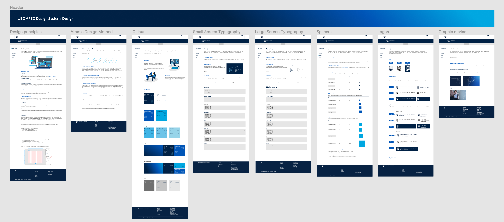

Atom - UBC Applied Science design system
How we created UBC APSC's visual language for building accessible and intuitive websites.
Project details
Team: Reginald Sacdalan - Web & Digital Comms Manager, Tony Wu - Software Developer, Lua
Presidio - Digital Marketing Assistant, Jessica del Rosario - UX/UI Designer & Project Lead
Role: UX/UI Designer, Illustrator, Project Lead
Tools: Figma, Miro, Qualtrics surveys, Jira
Timeframe: 2 months
Product: Atom - UBC APSC design system (implementation still in progress)
Background
Atom, UBC Applied Science’s design system, is a visual language that provides guidelines for UX, UI and development, ensuring that products are both accessible and intuitive. This helps cross-functional teams collaborate to create an engaging experience for the APSC audience.
‘Atom’, stemming from the Atomic Design Method, encompasses all the basic building blocks that can be used to create any of our digital assets.
Project goal
Our goal was to create a scalable and accessible pattern library with style guides that designers and developers could use across multiple products. This would not only help with efficiency of implementing new websites, but also ensure all designs aligned with branding and accessibility standards.
Research
- Comparative analysis: I took note of the information architecture, pattern libraries and style guidelines of established design systems such as Polaris, Primer, and Material to help inform our own IA.

- Component and branding audit: I took inventory of the components and styles that UBC APSC currently had available to help identify what might be missing, or what we might be able to tweak/remove.
- Card sorting: I used a card sorting process to organize the elements of our design system into meaningful groups.
- Information architecture mapping: I mapped out our information architecture to create a clear hierarchy and organization of all the elements within our design system.
- Accessibility testing: I tested the accessibility of all components within our design system using the WCAG 2.0 to ensure they met accessibility guidelines, and that those with visual impairments could still use our digital assets.
Design
This design system was created to optimize scalability and accessibility across browsers — each component was designed for mobile, desktop, and tablet breakpoints. Our Figma library also holds all of these styles and components, allowing us us to maintain consistent typography, colors, components, spacing, and more across all of our design files.
I communicated with our engineers to ensure that our design system was feasible for implementation, while also collaborating with teams in communications and marketing to ensure that our design system aligned with their needs and expectations. This helped me to design our web layouts to be intuitive for anyone, not just those from a design/engineering background.

I also created illustrations following the brand guidelines for our design system, adding a visual element to text-heavy pages in order to make them easier to digest while also keeping the user's attention.

Challenges + What I learned
This was my first experience fully leading a project — as both a project leader and designer, I learned how to communicate between roles effectively and create a simple yet effective way of handing off from design to development.
I was also creating a pattern library and style guidelines while our marketing team was conducting a rebranding on UBC APSC's visual identity. This made the process of creating a design system more complicated, but I learned the importance of efficient communication and task management as I navigated this challenge. This helped me grow not only as a designer, but also as a leader and project manager.